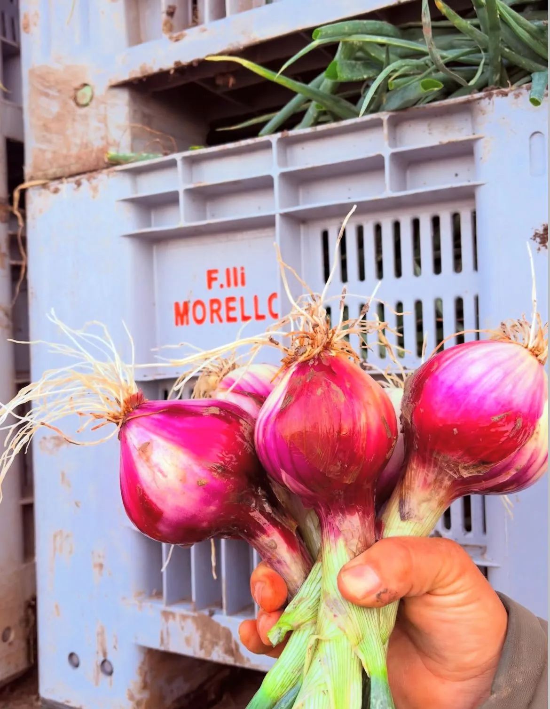
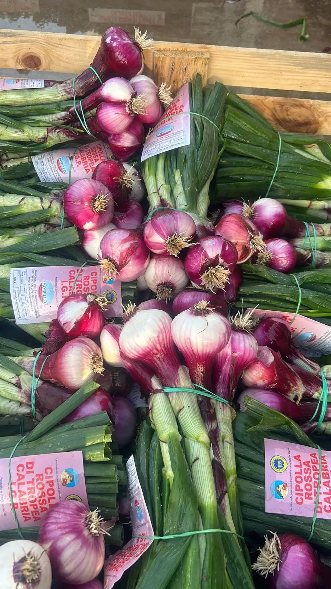
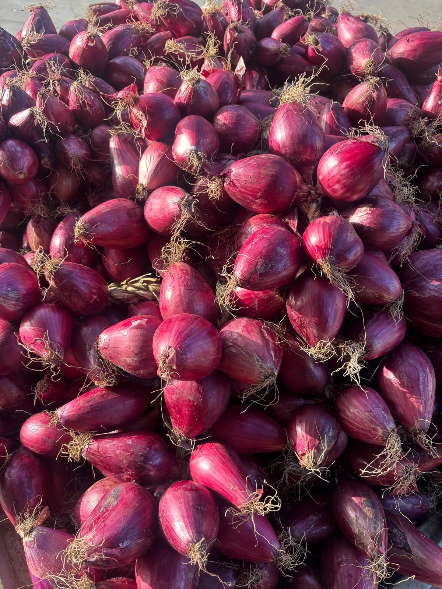
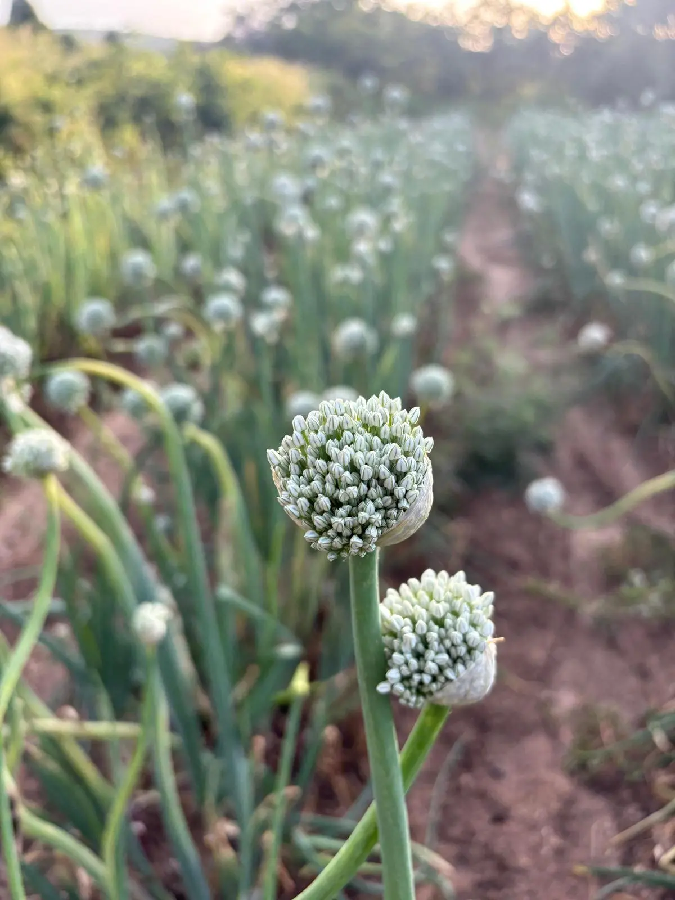
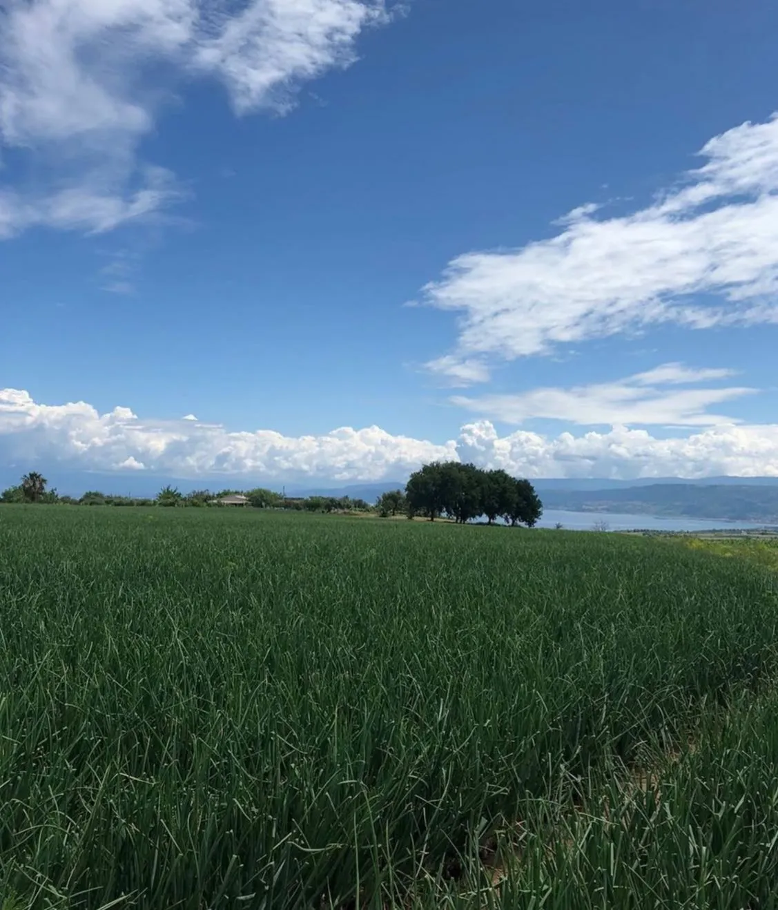

Il Nostro
Metodo.
Quattro generazioni ci hanno insegnato che la terra si rispetta prima ancora di coltivarla. Non esiste un prodotto eccellente senza un metodo rigoroso dietro. Ecco il nostro — ogni fase, senza filtri.

La terra si rispetta
prima di coltivarla.
Non coltiviamo cipolla sullo stesso terreno ogni anno.
La terra ha bisogno di riposo — e noi glielo diamo. Ogni appezzamento viene lasciato a riposo e poi alternato con colture diverse: grano, avena, mais, luppolo o favino. Non è solo avvicendamento: molte di queste colture vengono incorporate nel terreno ancora verdi, come sovescio naturale, arricchendolo di azoto e sostanza organica senza ricorrere a concimi di sintesi.
Il favino, in particolare, fissa l'azoto atmosferico nel suolo. Il luppolo e l'avena migliorano la struttura e la permeabilità. Il risultato, dopo anni di questa pratica, è un suolo vivo, profondo, non impoverito — che restituisce alla cipolla tutto ciò di cui ha bisogno per crescere con le sue caratteristiche organolettiche intatte.
Non è solo una scelta agronomica. È rispetto per la terra che ci sfama da quattro generazioni.
Ogni cipolla,
tra le nostre mani.
Dalla piantagione alla confezione, ogni cipolla passa attraverso le mani delle nostre persone. Da ottobre a marzo piantiamo le piantine una per una nel terreno, bulbo per bulbo.

Raccolta giovane,
lavorata subito.
Il cipollotto è la cipolla raccolta giovane, prima della piena maturazione. Viene estirpata a mano bulbo per bulbo, subito lavorata, pulita e confezionata — sempre a mano, cipolla per cipolla. Fresca, delicata, dal sapore dolce e immediato.

Essiccata al sole,
intrecciata a mano.
La cipolla secca viene raccolta a maturazione completa e stesa nel campo ad essiccare al sole — conservazione naturale. La coda si essicca, diventa resistente, e viene intrecciata a mano — quasi come una treccia di capelli — e confezionata nella cassetta.
Dal seme alla cipolla,
e ritorno.
La cipolla nasce da un seme. Un seme nasce dalla cipolla.
Dal seme cresce la piantina, e dalla piantina — a seconda di come viene coltivata e raccolta — può diventare cipollotto o cipolla secca. Ma come si produce il seme? Si pianta un bulbo di cipolla nel terreno. Da quel bulbo cresce uno stelo floreale che, una volta estirpato e lasciato essiccare, viene sfregato a mano: si aprono i fiori secchi e cadono i semi. Un ciclo completo, dalla terra alla terra.

Pochi chilometri
dal Tirreno.
I nostri campi si trovano a pochi chilometri dal Mar Tirreno, tra San Costantino di Briatico e la costa di Tropea.
Il microclima costiero — inverni miti, estati calde, brezza marina — è una delle ragioni per cui la Cipolla Rossa di Tropea ha quel sapore unico che non si riesce a replicare altrove.
Non è marketing: è geografia.
Coordinate
38°43'N · 15°59'E

Un metodo rigoroso.
Un sapore autentico.
Tutto questo per garantire una qualità che non si trova altrove. Contattaci per saperne di più sulla nostra realtà.